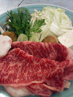
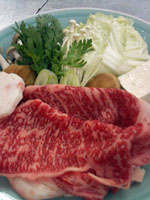
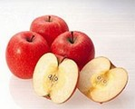
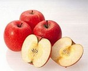

Food
Beef Menus
Yonezawa beef is well known all over Japan for its great taste. Sukiyaki, Shabushabu, and Steak set menus are very popular with our guests.
 
 
Healthy food
Eggs are boiled in hot spring water for 40 minutes. The half-boiled eggs are served at every inn and sold at every sovenior shop in Onogawa Onsen. These are delicious and good for health.
Yamagata-Prefecture is a kind of inland prefecture, so salt-water fishes were precious when transportations were limited. Instead, fresh-water fish dishes have been developed. The dish in the second photo is a carp stew. It is said that carp is good especially for women after delivering babies.
Buckwheat noodles, soba, is another popular food. Buckwheat enhances blood circulation and strengthens your veins. Soba is served in hot soup or chilled along with thick soy sauce. You can enjoy various toppings such as eggs, herbs, tempura, and grated taro.
The chef of our inn always seeks not only great taste but also healthy food for our guests. We sometimes conduct workshops for people who are interested in health and introduce macrobiotic food.


Fruits
Yamagata-Prefecture is called "The kingdom of fruits". Various fruits are available all the year around. Major fruits raised in Yamagata are cherries, apples, peaches, grapes and La France (Western pears).
 
